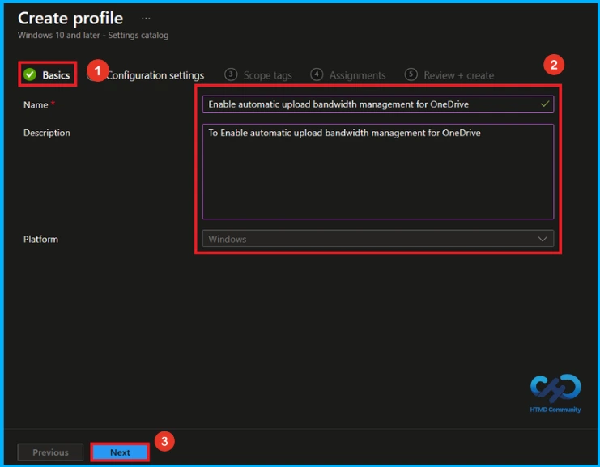
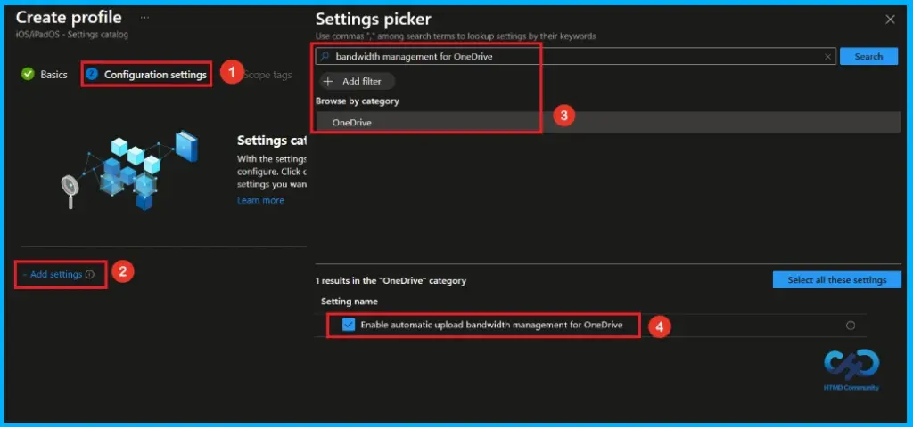
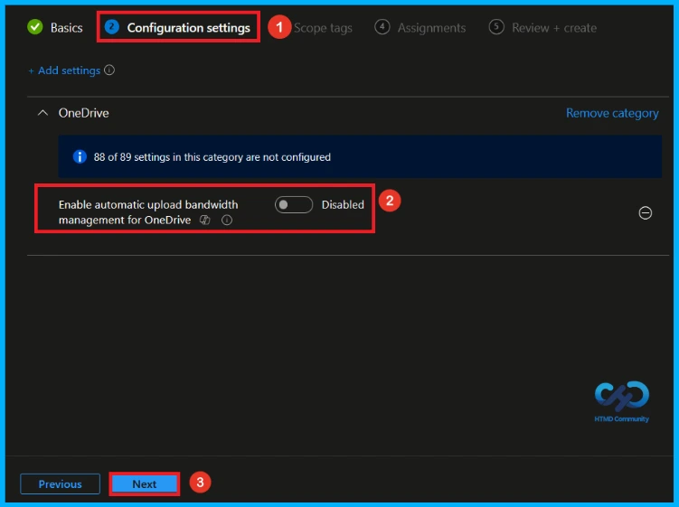
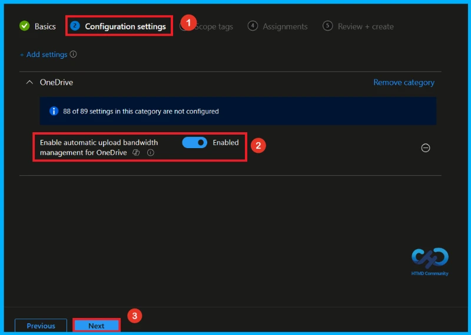
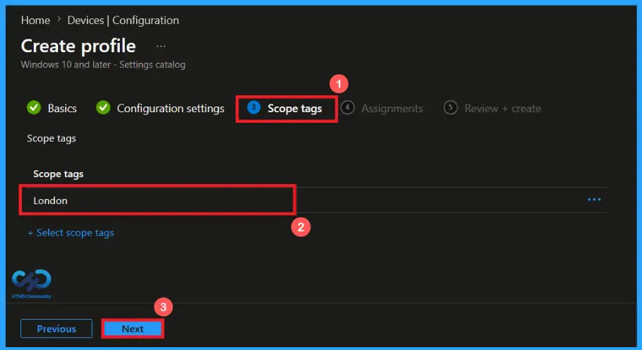
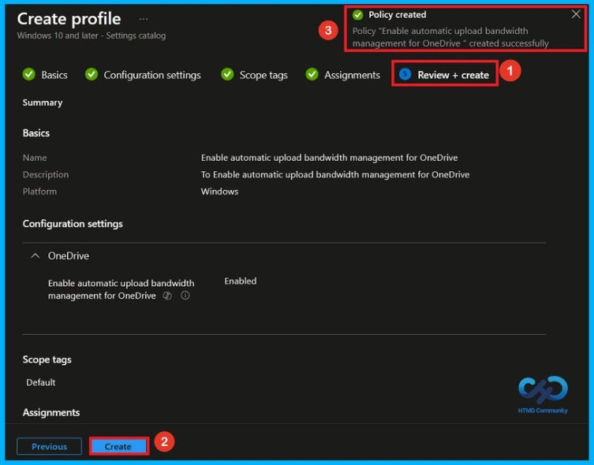
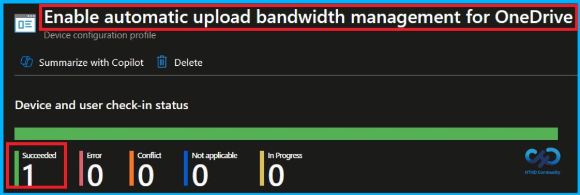
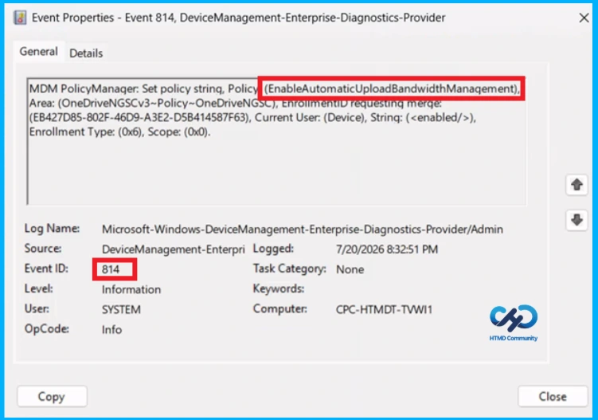
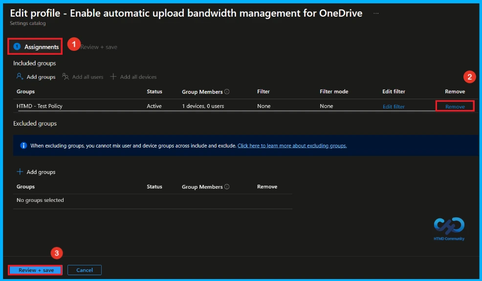
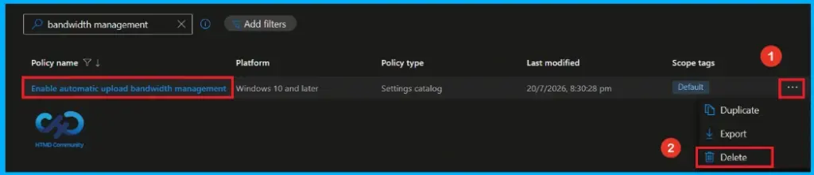

Key Takeaways
- Allows OneDrive to upload data in the background using available bandwidth.
- Uses the Windows LEDBAT protocol to reduce network interference.
- Automatically adjusts the upload rate based on bandwidth availability.
- Overrides fixed upload rate settings if both settings are enabled.
Hey, let’s discuss about how to Manage OneDrive Upload Speed with Windows LEDBAT in Microsoft Intune. This setting allows the OneDrive sync app to upload files only when there is free internet bandwidth. It automatically slows down uploads when other apps are using the network and speeds them up again when the network is less busy. This helps prevent OneDrive from affecting other internet activities.
Table of Contents
Manage OneDrive Upload Speed with Windows LEDBAT in Microsoft Intune
If this setting is enabled, OneDrive automatically manages the upload speed, and users cannot change it. If it is disabled or not configured, users can choose a fixed upload speed or automatic adjustment. It is recommended to use this setting instead of setting a fixed upload speed limit.
How to Create a Policy in Intune
To create a policy, the first step that you must do is to sign in to the Microsoft Intune Admin Centre. After clicking on the Device on the left side of the screen, select Configuration and then click Create and select New Policy.

Create a Profile
A new window titled Create Profile will appear. In this window, set the Platform to Windows 10 and later and select Settings Catalog as the Profile Type. After configuring these options, click Create to continue the policy creation.

Basic Tab of Automatic Upload Bandwidth Management of One Drive Policy
After creating the profile, the next step is to enter the basic details. Name of the policy as Enable Automatic Upload Bandwidth Management of One Drive and provide an appropriate Description(To Enable Automatic Upload Bandwidth Management of One Drive). Click Next to continue.

Configure Automatic Upload Bandwidth Management of One Drive
On this tab, click Add Settings. This will open a new window called Settings Picker. In the Settings Picker window, search for Bandwidth Management of One Drive using the search bar or select the OneDrive Category and Enable Automatic Upload Bandwidth Management of One Drive settings.

Disable Enable Automatic Upload Bandwidth Management of One Drive Policy
After selecting Enable Automatic Upload Bandwidth Management of One Drive policy and closing the Settings picker, you will see it on the Configuration page. This setting Enable Automatic Upload Bandwidth Management of One Drive policy is disabled by default. If you want to continue, click Next.

Enable Automatic Upload Bandwidth Management of One Drive
To enable the Automatic Upload Bandwidth Management of One Drive policy, locate the Automatic Upload Bandwidth Management of One Drive setting under OneDrive. Then, configure the setting by toggling the switch from left to right. After applying the setting, click Next to continue with the policy creation process.

What is Scope Tag
Scope tags are used to control which administrators can see and manage this policy in the Intune admin center. In the Scope tags section, you can assign one or more scope tags to the policy so that only specific IT teams or administrators have access to it. To add a scope tag, click Select scope tags and add London as scope tag, and then click Next.

Assignment Tab of Automatic Upload Bandwidth Management of One Drive Policy
The assignments tab is very important step that determines which groups can be selected to assign the policy. Click on the +Add groups option under included groups. Select the group(HTMD – Test Policy) from the list of groups on your tenant. And you can see the selected group on the Assignments tab. Click Next to continue.

Final Step of Policy Creation
Before completing the policy creation, you can review each tab to avoid misconfiguration or policy failure. After verifying all the details, click on the Create Button. After creating the policy, you will get a success message like “Enable Automatic Upload Bandwidth Management of One Drive created successfully”.

Monitor Policy Deployment Status
To verify whether the policy has been applied successfully, sign in to the Microsoft Intune admin center and navigate to Devices > Configuration profiles. From the list, select the policy. This will open the Enable Automatic Upload Bandwidth Management of One Drive policy overview page, where you can view a summary of its deployment status

Client Side Verification
To confirm if a policy has been applied, use the Event Viewer on the client device. Go to Applications and Services Logs > Microsoft >Windows >Device Management > Enterprise Diagnostic Provider > Admin. From the list of policies, use the Filter Current Log option and search for Intune event 814.
MDM PolicyManager: Set policy strinq, Policy (EnableAutomaticUploadBandwidthManagement),
Area: (OneDriveNGSCv3~Policy~OneDriveNGSC), EnrolimentiD requesting merge:
(EB427D85-802F-46D9-A3E2-D5B414587F63), Current User: (Device), Strinq: (),
Enrollment Type: (0x6), Scope: (0x0).

How to Remove Assigned Group from Automatic Upload Bandwidth Management of One Drive Policy
If you need to remove a group from a policy assignment for security updates. Open the Automatic Upload Bandwidth Management of One Drive policy from the configuration tab and click on the edit button. Then, click on the Remove button. Click Review + Save after making the changes.
For detailed information, you can refer to our previous post – Learn How to Delete or Remove App Assignment from Intune using by Step-by-Step Guide.

How to Delete Automatic Upload Bandwidth Management of One Drive policy from Intune
To delete Automatic Upload Bandwidth Management of One Drive policy, go to the Devices>Configuration and then search for the policy. Then the Automatic Upload Bandwidth Management of One Drive policy will appear on the screen. Click on the 3-dot menu and select the Delete option.
For detailed information, you can refer to our previous post – How to Delete Allow Clipboard History Policy in Intune Step by Step Guide.

Need Further Assistance or Have Technical Questions?
Join the LinkedIn Page and Telegram group to get the latest step-by-step guides and news updates. Join our Meetup Page to participate in User group meetings. Also, join the WhatsApp Community and the Whatsapp channel to get the latest news on Microsoft Technologies. We are there on Reddit as well.
Author
Anoop C Nair has been Microsoft MVP from 2015 onwards for 10 consecutive years! He is a Workplace Solution Architect with more than 22+ years of experience in Workplace technologies. He is also a Blogger, Speaker, and Local User Group Community leader. His primary focus is on Device Management technologies like SCCM and Intune. He writes about technologies like Intune, SCCM, Windows, Cloud PC, Windows, Entra, Microsoft Security, Career, etc.